EDA- Suicide rates

Data Source : data.world
Softwares: Python
Workflow
1. Objective
2. Data preparation
2. Analysis and Visualization
3. Summary of results
1. Objective
The project attempts to analyze the suicide rates patterns and its link to certain variables across several countries and age groupSuicide rates are one of the leading cause of deaths. I tried to identify the relationship between suicide rates and growing population, gdp percapita or if its affiliated with certain age groups and Gender.
2. Data Preparation
Loading the Libraries
The numpy, pandas library was used for analysis while the matplotlib, seaborn for visualizing the dataset.Importing the dataset
The dataset was imported in csv format using the pandas library 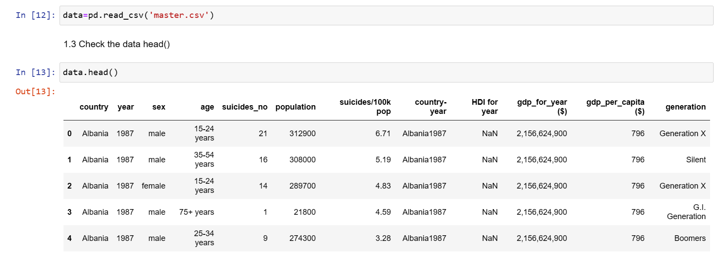Data Cleaning
The dataset was checked for missing values. after checking the shape to identify the number of rows and columns, the datatype was also checked. 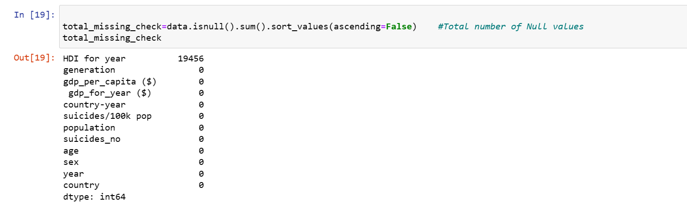Analysis and Visualization
Check the frequency table for the age ranges. Bar plot to check the number of Suicides by top Countries 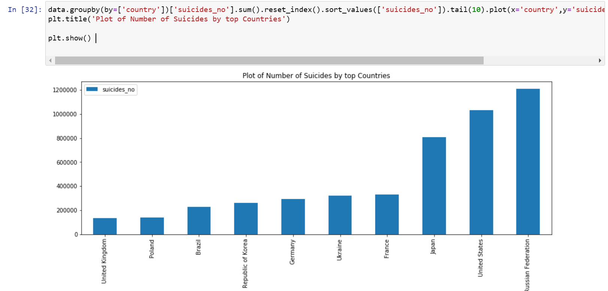 The barplot shows that the russian federation have the highest number of suicide rates, followed by the united stetes and the least being the UK and Poland. This was done by grouping the suicide number by countries. Bar plot to check the number of Suicides by top Countries 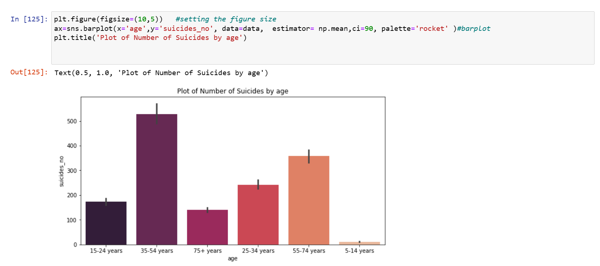 The bar plot of the Number of suicides by age shows that suicide rates are more common within the age group 35-54, 55-74, while it is very low between 5-14years viewing this pattern accross the whole countries. Plot of Suicide by Sex 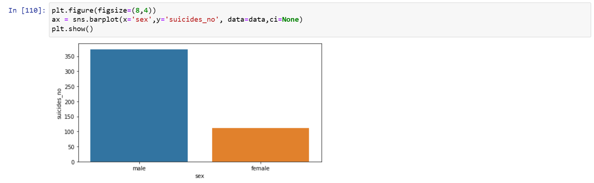 Based on the size of the bars, there seems to be a significantly more suicides among male than among female. Plot of Number of Suicides versus generation 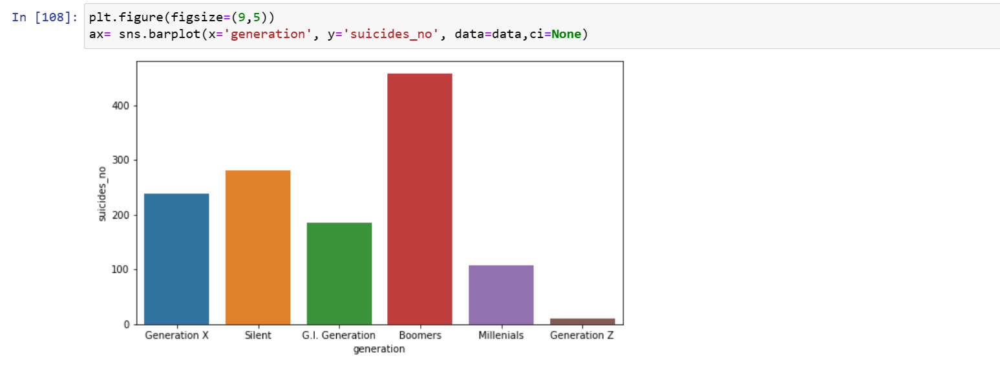 The suicides rate for Baby Boomers(People born after the second world war) seems to be high compared to the others. Plot of Number of Suicides versus Population This is a numerical vs numerical data, so, scatter plot will be a good preference. 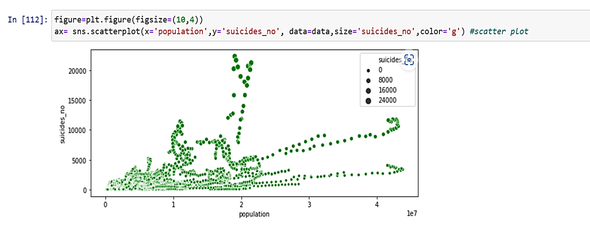 In order to a more clearer picture to establish this relationship, we introduce a regression line. 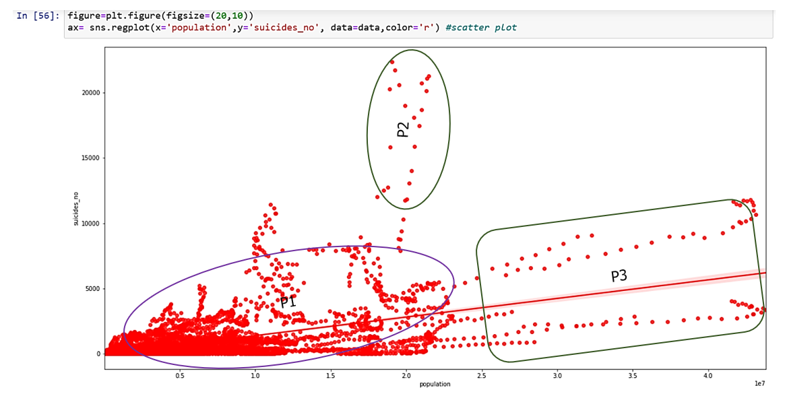 To view the relationship lineraly, using a line plot 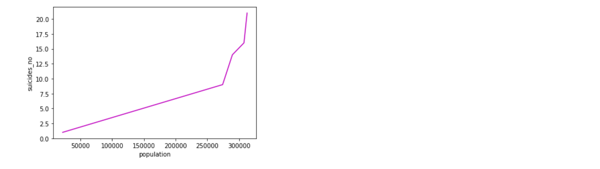 We can observe that there appears to be a significant relationship between the suicide rate and population. While majority of suicide rates was seen to decrease with decreased population P1, it is worthy of note that, in few areas, suicide rates did not increase in a direct proportion with the population P2, P3. This means that globally population explosion is not usually responsible for high suicide rates recorded. Effect of gdp percapita on the Suicide rate 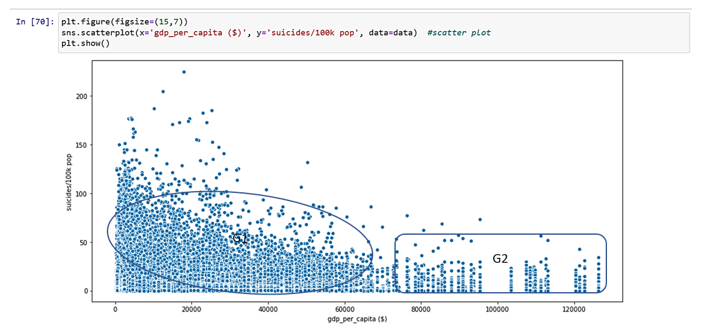 For a population sample of a hundred thousand (100K), contrary to the convention, from the scatter plot, we can see certain countries G1 Has a high number of suicide rates when the gdp percapita was from less than $50000. However, another 100K population sample G2 showed a reduction in suicide rate as the gdp percapita increased. The gdp percapita is the monetary value of a country per person. In general, from the data, on the left side G1, we have more of a low suicide rates when the gdp per capita is low and few low suicide rate when the gdp per capita is high at G2. Note that this plot cut across all the countries. We can view these correlation among the continous variable using the Heat map 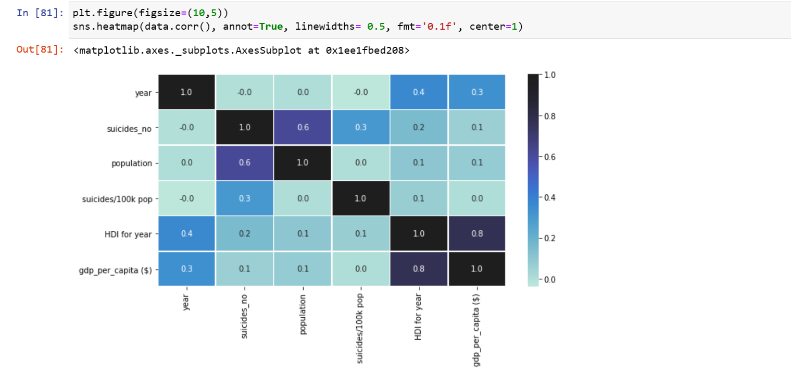 The result of the heat map shows that there exist a small but insignificant correlation between the suicides rate and gdp_percapita($)=0.1 Integrating the data Bar plot to check the Number of suicides by sex and age to generate a single plot Trend plot of suicide rates across all the years
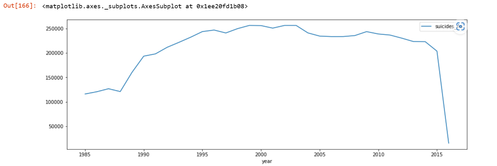
Suicide rate began to increase from the year 1985 and gained an upward trend until 2004 where it began to decline gradually and snapped down from the year 2014 to 2015.
Trend plot of suicide rates across all the years
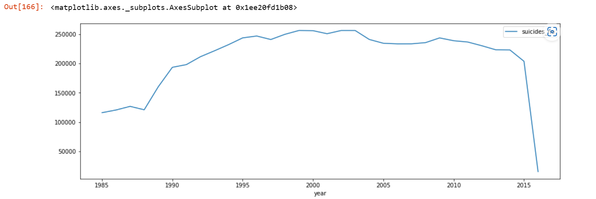
Suicide rate began to increase from the year 1985 and gained an upward trend until 2004 where it began to decline gradually and snapped down from the year 2014 to 2015.